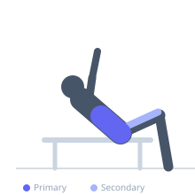
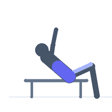

Exercise guide / Reverse Crunch on Incline Bench
Reverse Crunch on Incline Bench
The reverse crunch performed on an incline bench elevates the head end above the hip end, adding gravitational load to the lower abdominal region throughout the movement compared to the flat-bench version. The athlete grasps the bench behind the head, extends the legs below horizontal, and pulls the knees toward the chest by posteriorly tilting the pelvis — a movement almost exclusively controlled by the lower rectus abdominis. The incline increases both the eccentric and concentric challenge.
Primary muscles
rectus abdominis
Secondary muscles
iliacus
psoas major
internal oblique
Stabilizers
transverse abdominis
Equipment
Adjustable Bench (Incline / Decline)


Starting position
- Lie on the incline bench with the head at the high end. Grasp the bench behind the head. Legs are extended, lowered below the hip level.
Setup
- Set the bench to 20–30° incline. Ensure the head-end grips are within comfortable reach.
Steps
- Step 1: Begin with legs extended and lowered below the bench plane (against the gravity).
- Step 2: Curl the pelvis backward (posterior tilt) and draw the knees toward the chest simultaneously.
- Step 3: At the top, the knees should be at or above the hip level and the lower back is lifted off the bench.
- Step 4: Slowly lower the legs back down, resisting the eccentric pull.
- Step 5: Return to full extension without letting the legs drop rapidly.
Coaching cues
- Pull with the abs, not the hip flexors
- Curl the tailbone up — do not just swing the legs
Breathing
- Exhale as the knees come toward the chest. Inhale on the controlled descent.
Range of motion
- Legs from full extension below horizontal to knees drawn to chest with lower back lifted.
Tempo
- 2-1-3-0. Slow eccentric is essential on the incline version.
Common mistakes
- Using momentum from the legs rather than initiating with posterior pelvic tilt
- Not lifting the lower back off the bench at the top — full contraction requires this
Safety
- If grip fatigue limits reps before the core does, use wrist straps
Training
- hypertrophy: 12–20 reps
- hypertrophy: 3–4 sets
- Rest: {'hypertrophy': 60}